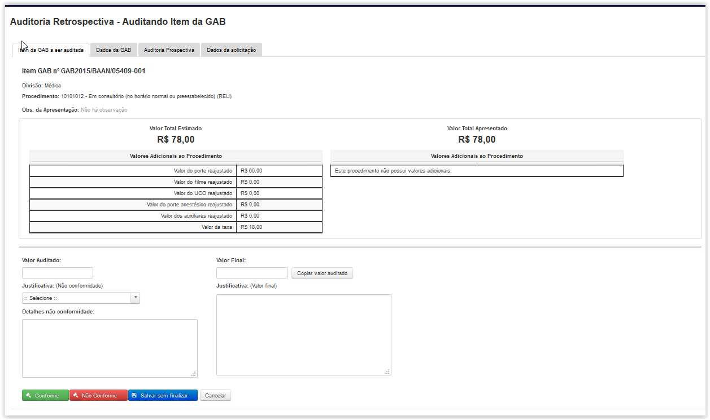

Depois que a GAB é apresentada o próximo passo é a auditoria retrospectiva.
Ao clicar na opção 'Realizar Auditoria GAB' o Sistema apresentará a tela 'Auditoria Retrospectiva – Itens a serem auditados' (Fig.36) onde será exibida uma tabela com cada item de GAB que foi realizado para ser auditado.

Fig.36 Tela 'Auditoria Retrospectiva - Itens a serem auditados'
Ao clicar no botão Visualizar () é exibida a tela 'Auditoria Retrospectiva – Auditando Item da GAB' (Fig.37) contendo os Dados da Solicitação, Auditoria Prospectiva e dados da GAB.

Tela 'Auditoria Retrospectiva - Auditanto Item da GAB'

Tela 'Auditoria Retrospectiva - Auditanto Item da GAB'

Tela 'Auditoria Retrospectiva - Auditanto Item da GAB'

Tela 'Auditoria Retrospectiva - Auditanto Item da GAB'
Para marcar um item como conforme é necessário inserir um Valor Final e uma justificativa e clicar em( ).
).
Para marcar um item como não conforme é necessário inserir um valor auditado e selecionar uma justificativa e clicar em().
Caso deseje o auditor pode salvar uma auditoria para finalizar mais tarde. Ao clicar em() as alterações feitas serão salvas e o estado da auditoria passará para 'Auditoria Iniciada'.